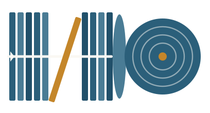
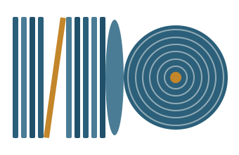

Changes in 4b: spines slimmed 12→10 · regrouped 4 left / 5 right (leaner from the smaller left group) · lean tightened 18°→15° with the right group moved in so the gap shrinks ~65→54px (geometry preserved) · play triangle moved to the left edge of the right group. All geometry is blind-computed — needs your eye.

5 left · 4 right · 18° lean · triangle on first (far-left) spine

4 left · 5 right · 15° lean · slimmer · triangle on right group's first spine